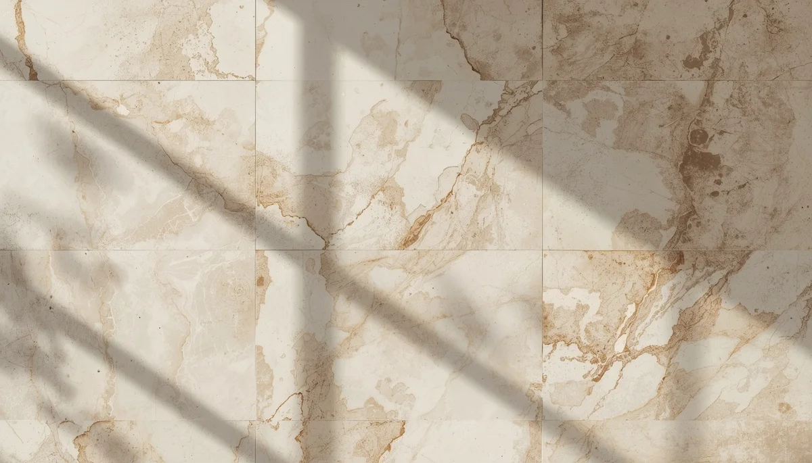

La prueba de Adams y el examen visual
La maniobra o test de Adams es la exploración física fundamental que utilizan tanto los pediatras como los especialistas en traumatología para evaluar la presencia de escoliosis. Se trata de un método sencillo, no invasivo y visual que permite evidenciar la rotación vertebral característica de esta desviación.
Cómo se realiza la maniobra de flexión
Durante la prueba, se le pide al menor que se incline hacia adelante desde la cintura, con las rodillas estiradas y las palmas de las manos juntas apuntando hacia el suelo. En esta posición, el examinador se sitúa por detrás o frente al niño para observar si un lado de la espalda o de las costillas se eleva más que el otro, formando una prominencia conocida como giba costal.
Interpretación orientativa y visita médica
La presencia de asimetría o desnivel durante esta prueba no constituye un diagnóstico definitivo por sí misma, pero sí representa una señal clara para acudir al médico y solicitar una valoración clínica especializada.
"El test de Adams es una herramienta clínica elemental que facilita la detección visual de la rotación de la columna."
Explorar con sencillez y rigor preventivo
Conocer este tipo de exploraciones básicas dota a las familias de recursos informativos útiles para acompañar la salud física con responsabilidad.
➔ Volver al índice de Escoliosis Idiopática